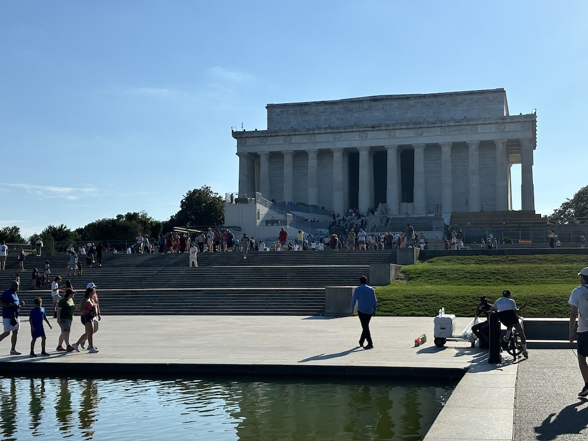
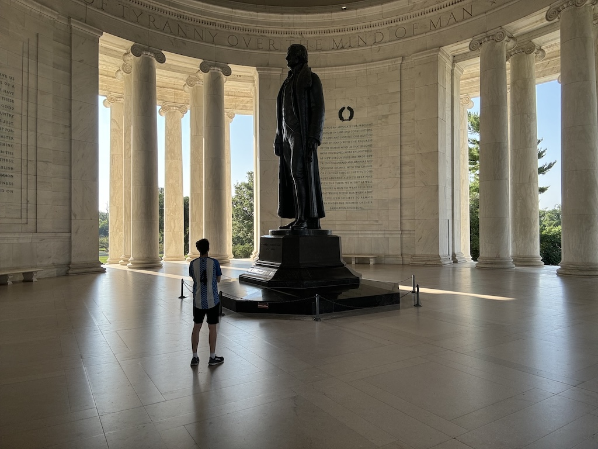
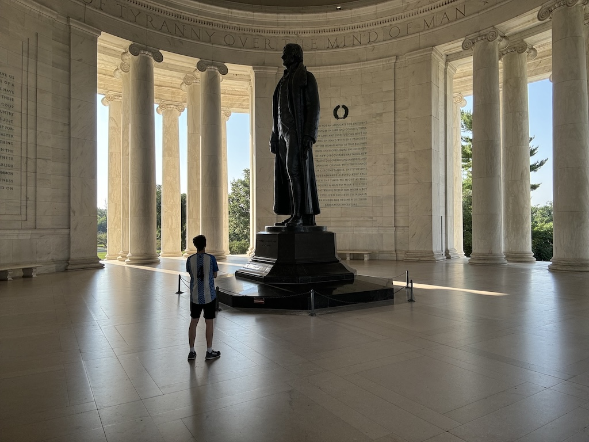

15th to 18th June 2024
First major city of the trip. The drive down to Washington D.C took about 5 1/2 hours, but I arrived in the evening with enough time to walk down to the capitol mall before it got dark. With the car parked in the garage beneath the hotel and my valuables stowed away in my shared room locker I walked to the Abraham Lincoln memorial, fortunately only around 30 minutes from my bed for the next few days.
Being about 6pm on a Saturday it was heaving with tourist. In 2024 it seems most people spend more time trying to get a good photo of themselves next to the landmark to share with others than actually looking at it. After traveling all this way, I do have to wonder why some people pay so much to then spend half the time looking at Abraham through their phone screen. I'm now resolved to only spend a moment taking photos of where I am, and will try to follow it up with 5 more of just looking and enjoying. Opposite the memorial is the reflection pool (which I have to admit I recognise first from Forrest Gump when he reunites with Jenny after his service) and behind it the rest of the "Capitol Mall".

I continued to stroll around until it was dark, including a soaking of my feet in the WW2 memorial. I encourage everyone to learn about the wars, but in particular the 2nd World War, with by far the most bloodshed of any conflict in human history. The memorial commemorates not just a battalion, or an army, but a whole generation that was caught up by pure chance in a very dark time. It could have been anyone. Lest we forget.

The next day was a 30,000 step day, visiting 4 different museums and viewing the various other monuments on the Mall. I got this cool shot of the Capitol building down Pennsylvania Avenue. Looks like a lot of roads lead out from the Capitol building, like spokes on a wheel. As a result driving or walking around the city you end up spotting it unusually often. The same is sort of true for the White House, but as it's obscured by foliage from behind it's not so eye-catching.

Now of course, I had to go to the Air & Space museum. I knew there would be lots on about the moon landings and other aviation history. Although I somehow forgot that this museum displays the original Wright brothers plane, a really quite impressive piece when you think about it. The only part that has been replaced is the fabric on the wings - the wooden parts are original!
I got this photo of a new exhibit being built for later this year supposedly, any thoughts on what it's about? The gold foil object suggests is a space related room, but then there's a propeller powered plane as well. Maybe the theme is plastic wrapped objects. If so I'd say they're almost finished.

More space stuff. They had replicas of all the lunar (lunar? I think it's lunar) rovers used on the missions to Mars or the Moon.

And even the command module from Apollo 11 named "Columbia" (the one where Neil Armstrong walked on the monn). It's the only part of the rocket that returned to Earth.

Next I went to the National Indian American museum.


 
Navigate home

Navigate home